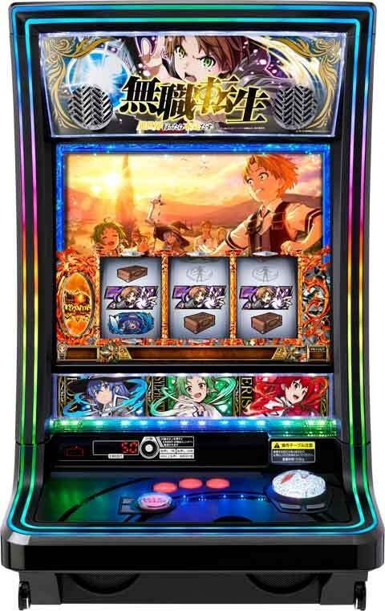
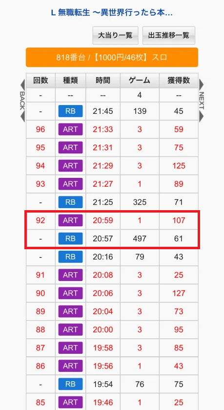
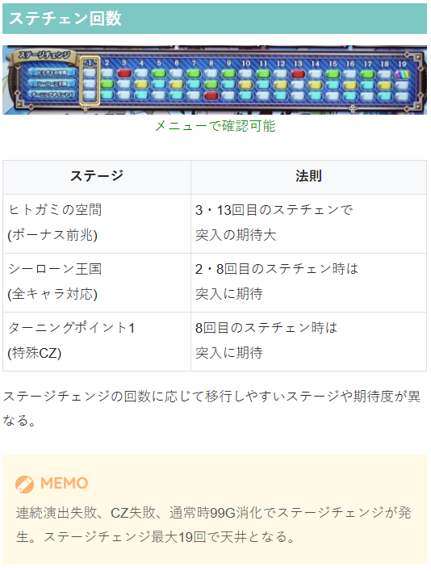
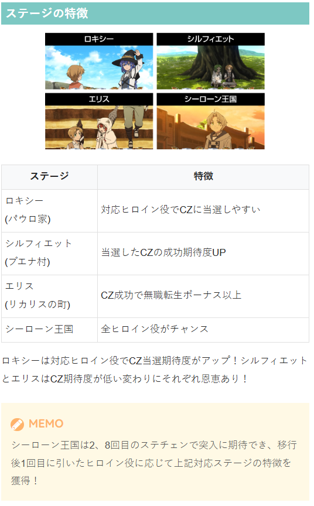

無職転生 ～異世界行ったら本気だす～

| 項目 | 内容 |
|---|---|
| ボーナス間天井 | ステチェン最大19回 |
| 恩恵 | ボーナス |
| リセット後 | 最大13回に短縮 |
| AT駆け抜け後 | 最大13回に短縮 |
| AT間天井 | ステチェン最大40回 |
| 恩恵 | エピソードボーナス |
| リセット後 | 最大17回に短縮 |
| 項目 | 内容 |
|---|---|
| 有利区間 | 有利区間リセット時は上位ATへのCZ「ターニングポイント2」に突入!? |
狙い目
周期タイプの台。1周期平均50Gくらい？メニュー画面から確認可能。
連続演出失敗、CZ失敗、通常時99G消化でステージチェンジが発生。
ステージチェンジ最大19回で天井となる。（ボーナス間）
天井・リセット狙い
| 条件 | 狙い目 |
|---|---|
| リセット後 | 8周期〜AT当選まで（目安400G） |
| AT駆け抜け後 | 8周期or10周期〜（目安400-450G） |
| 魔術ボナ失敗後 | 8周期or10周期〜（目安400-450G） |
| 上記以外 | 12周期〜（目安600G） |
| AT間天井狙い | 28周期〜（目安1400G） |
※魔術ボーナスを履歴から確実に見抜けるか不明
ゾーン狙い
| 条件 | 狙い目 |
|---|---|
| 8周期目 | 7周期目残り40Gくらいから。 8周期到達時にCZ当選かシーローン王国移行の有無を確認してどちらも該当しなければやめ。 |
示唆関連の押し引きについて
| 示唆・条件 | 対応 |
|---|---|
| ステージ | シーローン王国、ヒトガミの空間は、ステチェンor前兆発生まで |
有利区間関連狙い
不明
やめ時
| 条件 | 対応 |
|---|---|
| 基本 | AT、ボーナス終了後にヤメ。 ボーナス後は「AT間天井」が近くないかを必ずチェック。 |
その他
履歴の見方
赤枠が駆け抜けと思われる。
魔術ボーナス、無職転生ボーナスはRB表示。
魔術ボーナス約50枚、無職転生ボーナス約70枚だがハッキリとは区別つかなそう？
40枚前後未満なら魔術、80枚前後以上なら無職転生と判断出来るかも？



参考元
かめとうさぎのパチスロブログ
基本情報
- メーカー: ニューギン
- 機械割: 97.7% 〜 113.7%
- 導入開始日: 2025年12月22日（月）
- ゲーム性概要: ●次世代筐体「MIRAI-H」はレバー非搭載で、MAX BETスタートが一体！ ●手を置いてゆったりと遊技できる新感覚かつ快適に楽しめる ●通常時はヒロイン役でCZを目指すゲーム性 ●ステージチェンジ回数によるボーナス抽選もあり ●ATはセット継続タイプで、ヒロイン役でVストックを抽選！ ●最強の特化ゾーン「七大列強龍神オルステッド」搭載


打ち方
打ち方・小役
打ち方（小役狙い）
［最初に狙う絵柄］ ナビなし時はオールフリー打ちでOKだ。
［ヒロイン役の停止形］
変則押しはNG
ナビ非発生時は左1stでの消化を推奨だ。
確定役
ヒロイン役トリプルの恩恵
ヒロイン役トリプル成立時は状態に応じて大きな恩恵を獲得できる。
ヒロイン役トリプルの恩恵
| 状態 | 恩恵 |
|---|---|
| 通常時 | エピソードボーナス濃厚 |
| 無職チャンス（CZ） | エピソードボーナス濃厚 （シルフィCZ時はヒロインVストックも獲得） |
| ボーナス確定画面 | ボーナス種別が2段階昇格 （エピソードボーナス以上濃厚） |
| 魔術発動チャンス | 恩恵3段階昇格（ダブルヒロインV以上濃厚） |
| ボーナス | トリプルヒロインV濃厚 |
| 転生の回廊 | トリプルヒロインV濃厚 |
| AT | トリプルヒロインV＋バケーションゾーン濃厚 |
| バケーションゾーン | 各ヒロイン役の恩恵をまとめて獲得 |
解析情報通常時
小役関連
小役確率
| 役 | 確率 | |
|---|---|---|
| リプレイ | 約1/7.3 | |
| 1枚役 | 約1/1.3 | |
| 共通9枚役 | 約1/35.4 | |
| ヒロインチャンス | 約1/91.0 | |
| ヒロイン役 シングル | ロキシー | 約1/113.8 |
| ヒロイン役 シングル | シルフィ | 約1/113.8 |
| ヒロイン役 シングル | エリス | 約1/113.8 |
| ヒロイン役 ダブル | ロキシー&シルフィ | 約1/1560.4 |
| ヒロイン役 ダブル | シルフィ&エリス | 約1/1560.4 |
| ヒロイン役 ダブル | ロキシー&エリス | 約1/1560.4 |
| ヒロイン役トリプル | 約1/8192.0 | |
| ヒロイン役合算 | 約1/25.4 |
基本的に小役確率は全設定共通だ。
ヒロインチャンス
通常時・AT中共通で発生する択当てチャレンジで、3択に正解すれば対応したヒロイン役濃厚（押し順ナビが発生するパターンもあり）。失敗しても非対応のヒロイン役が停止する。
ヒロインチャンス
| 発生確率 | 約1/91.0 |
|---|---|
| 3択当て成功時 | 対応のヒロイン役濃厚 |
| 3択当て失敗時 | 非対応のヒロイン役濃厚 |
ステージ（周期抽選）
ステージチェンジ概要
ステージチェンジ回数に応じて「ヒトガミの空間」・「シーローン王国」・「ターニングポイント1」の移行率が変化。 ステージチェンジ回数ごとのマップは実機の液晶で確認することができる（上画像）。
ステージチェンジの特徴
1ステージの平均滞在は53G
ボーナス間 最大19回 でボーナス当選
AT間 最大40回 でエピソードボーナス当選
3回目までのボーナス当選期待度は 約60%
ステージチェンジごとに特殊CZやシーローン王国移行を抽選
ステージチェンジ回数でボーナスを抽選
設定変更後はボーナス間天井が 最大13回 、AT間天井が 最大17回 に短縮
AT駆け抜け後と魔術ボーナス失敗後はボーナス間天井が 最大13回 に短縮
ステージチェンジ契機
連続演出（前兆）失敗
CZ失敗
通常時99G消化
ステージ対応のチャンス目を引いた場合はCZ非当選でも連続演出失敗になるため、ステージチェンジが発生する。
ステージとヒロイン役解説
ステージに対応したヒロイン役を引けばCZのチャンスで、リールや筐体のランプでもどのリールのヒロイン役が停止すれば期待できるのかをわかりやすく表示。 シーローン王国滞在時は全ヒロイン役がチャンスになる。
対応したヒロイン役成立時のCZ当選期待度
| 対応ヒロイン目 | 期待度 |
|---|---|
| ロキシー | 約50% |
| シルフィ | 約25% |
| エリス | 約25% |
［ロキシーステージ］ CZに当選しやすいステージ。
［シルフィステージ］ ロキシーよりもCZに当選しにくいぶん、CZの成功期待度が高い。
［エリスステージ］ CZ当選率はシルフィと、CZ成功期待度はロキシーと同じだが、CZに成功すれば無職転生ボーナス以上濃厚となる。
［シーローン王国ステージ］ 全てのヒロイン役がチャンスになる高確ステージだ。
ヒトガミの空間
ステージチェンジでボーナス直撃に当選していればこのステージを経由して告知。 周期開始時に移行する、いわゆる前兆ステージと考えてOKだ。
ヒトガミの空間 性能
| 移行契機 | ステージチェンジ時の一部 |
|---|---|
| 移行時の抽選 | ボーナス本前兆移行を抽選 |
| 消化中の抽選 | ヒロイン役でボーナス本前兆への書き換え抽選 |
連続演出確率＆本前兆期待度
| 設定 | 平均確率 | トータル本前兆期待度 |
|---|---|---|
| 1 | 約1/53.4 | 約53.3% |
| 2 | 約1/53.2 | 約53.3% |
| 3 | 約1/52.9 | 約53.3% |
| 4 | 約1/52.6 | 約53.4% |
| 5 | 約1/52.3 | 約53.5% |
| 6 | 約1/51.7 | 約53.6% |
基本的に連続演出失敗を契機にステージがチェンジする。
ヒトガミの空間移行確率
| 設定 | 平均確率 | トータル本前兆期待度 |
|---|---|---|
| 1 | 約1/157 | 約31.8% |
| 2 | 約1/156 | 約32.2% |
| 3 | 約1/156 | 約32.7% |
| 4 | 約1/155 | 約34.7% |
| 5 | 約1/154 | 約36.6% |
| 6 | 約1/153 | 約41.0% |
高設定ほど移行率が高いうえ、本前兆である可能性も高い。
非ヒトガミの空間移行時のステージ振り分け
※AT後2周期目は設定不問でシーローン王国濃厚
ヒトガミの空間だけでなく、シーローン王国移行率も高設定が優遇される。
ヒロイン役時のステージチェンジ以上当選率
| ヒロイン役 | 当選率 |
|---|---|
| 対応シングル以上 | 100% |
| 非対応シングル | 約25% |
対応ヒロイン役は連続演出orCZ（ステージチェンジ以上）濃厚、非対応ヒロイン役でも約25%でステージチェンジ以上になるため、周期を進めることができる。
無職チャンス（CZ）
CZトータル確率
| 設定 | 確率 |
|---|---|
| 1 | 約1/130 |
| 2 | 約1/129 |
| 3 | 約1/128 |
| 4 | 約1/127 |
| 5 | 約1/127 |
| 6 | 約1/125 |
CZ当選率（設定1）
| ヒロイン役 | ロキシーステージ中 | シルフィor エリスステージ中 |
|---|---|---|
| 非対応シングル | 約6.3% | 約6.3% |
| 対応シングル | 約50.1% | 約25.0% |
| 非対応ダブル | 約25.0% | 約24.9% |
| 対応ダブル | 100% | 約87.5% |
各ヒロイン役確率は同じなので、ロキシーステージはCZに当選しやすい。シルフィとエリスステージのCZ当選率は同じで、前者はCZの成功期待度が高く、後者はCZ成功時の恩恵が無職転生ボーナス以上になる。 シーローン王国ステージ中はどのヒロイン役を引いても対応ヒロイン役として抽選される。
ロキシーCZ
ロキシーのヒロイン目を引けばチャンス。
ロキシーCZ 性能
| 当選契機 | ロキシーステージ中のCZ |
|---|---|
| 成功期待度 | 約50% |
| 継続ゲーム数 | 10G＋α |
| ヒロイン役確率 | 約1/6.8 |
| 消化中の抽選 | ヒロイン役でボーナス抽選、 ロキシーヒロイン役なら大チャンス |
| 備考 | 成功後の残りゲームでは ヒロイン役でボーナス種別昇格を抽選 |
ボーナス当選率（設定1）
| ヒロイン役 | 当選率 |
|---|---|
| 非対応シングル | 約13.5% |
| ロキシーシングル | 約50.4% |
| 非対応ダブル | 約27.4% |
| ロキシー含むダブル | 100% |
［ジャッジゲーム］ CZ終了後は5G前後のジャッジゲームに突入して、ルーデウスがキュムロンニンバスを詠唱できれば成功だ。
※ジャッジゲームも成立役に応じてボーナスを抽選
シルフィCZ
シルフィのヒロイン目を引けばチャンス。
シルフィCZ 性能
| 当選契機 | シルフィステージ中のCZ |
|---|---|
| 成功期待度 | 約66% |
| 継続ゲーム数 | 10G＋α |
| ヒロイン役確率 | 約1/6.8 |
| 消化中の抽選 | ヒロイン役でボーナス抽選、 シルフィヒロイン役なら大チャンス |
| 備考 | 成功後の残りゲームでは ヒロイン役でボーナス種別昇格を抽選 |
ボーナス当選率（設定1）
| ヒロイン役 | 当選率 |
|---|---|
| 非対応シングル | 約27.1% |
| シルフィシングル | 約75.8% |
| 非対応ダブル | 約54.2% |
| シルフィ含むダブル | 100% |
［ジャッジゲーム］ CZ終了後は5G前後のジャッジゲームに突入して、ルーデウスがシルフィと仲直りできれば成功だ。
※ジャッジゲームも成立役に応じてボーナスを抽選
エリスCZ
エリスのヒロイン目を引けばチャンス。
エリスCZ 性能
| 当選契機 | エリスステージ中のCZ |
|---|---|
| 成功期待度 | 約50% |
| 継続ゲーム数 | 10G＋α |
| ヒロイン役確率 | 約1/6.8 |
| 消化中の抽選 | ヒロイン役でボーナス抽選、 エリスヒロイン役なら大チャンス |
| 備考 | 成功後の残りゲーム数では ヒロイン役でボーナス種別昇格を抽選 |
ボーナス当選率（設定1）
| ヒロイン役 | 当選率 |
|---|---|
| 非対応シングル | 約13.5% |
| エリスシングル | 約50.4% |
| 非対応ダブル | 約27.4% |
| エリス含むダブル | 100% |
［ジャッジゲーム］ CZ終了後は5G前後のジャッジゲームに突入して、レッドフードコブラを討伐できれば成功。 開始画面の背景はデフォルトが白、赤ならチャンスアップだ。
※ジャッジゲームも成立役に応じてボーナスを抽選
CZ成功時のボーナス比率（設定1）
| CZ種別 | 無職ボーナス以上 | 魔術（本気）ボーナス |
|---|---|---|
| ロキシーCZ | 約51.7% | 約48.3% |
| シルフィCZ | 約53.8% | 約46.2% |
| エリスCZ | 100% | 一 |
| ターニングポイント① | 100% | 一 |
シルフィCZ中
※CZ共通でトリプルはAT濃厚（実戦上）
CZ中の予見眼発生率
| 設定 | 発生率 |
|---|---|
| 1 | 17.6% |
| 2 | 17.7% |
| 3 | 17.8% |
| 4 | 18.1% |
| 5 | 18.3% |
| 6 | 18.7% |
ボーナス当選率だけでなく、ヒロインチャンス時の予見眼（ナビ発生）発動率も高設定ほど優遇。 通常時と同じく予見眼の示唆も発生するので注目しておこう。
ターニングポイント1（特殊CZ）
特殊CZ概要
ステージチェンジの一部などで当選するCZで、滞在中はヒロイン目確率が大幅にアップ。 成功すればエピソードボーナス濃厚（AT当選）となる。 さらに、成功後はヒロイン役を引くごとにエピソードの種類がランクアップしていく。
特殊CZ（ターニングポイント1） 性能
| 当選契機 | ステージチェンジ時の一部 |
|---|---|
| 成功期待度 | 約55% |
| 継続ゲーム数 | 5G |
| 消化中の抽選 | ヒロイン役成立でエピソードボーナス濃厚、 ヒロイン役成立ごとにエピソードが昇格 |
［エピソードの色で種類を示唆］ 実戦上、ダブルヒロイン役を引けば2段階以上アップ。昇格させたエピソードはリール左側でも確認できる。
フリーズ
ロングフリーズ動画
エピソードボーナス（ターニングポイント2）に当選。ボーナス終了後は七大列強龍神オルステッドを経由して、ATへ突入する。
解析情報ボーナス時
ボーナス
無職転生ボーナス
毎ゲーム全役でATを抽選するAT突入のメインルートとなるボーナス。 開始時は3種類の告知パターンを任意に選択できる。
無職転生ボーナス 性能
| 当選契機 | CZ成功、ステージチェンジ時の抽選など |
|---|---|
| AT期待度 | 約50% |
| 継続ゲーム数 | 25G |
| 平均獲得枚数 | 約70枚 |
| 消化中の抽選 | AT抽選、AT当選後はVストック抽選 |
| 備考 | AT中はVストックを1個獲得 |
AT確定後のヒロイン役でVストックを獲得した場合は40％以上がヒロインVになる。
［告知パターン選択］ チャンス告知、ヒロイン告知、突発告知の3種類。左右ボタンを長押しすれば裏告知ver.に変更することも可能だ。
ヒロイン役（単体）出現率＆出現時のAT期待度
| 告知タイプ | 出現率 | 期待度 |
|---|---|---|
| チャンス告知 | 約1/10.2 | 約21.3% |
| ヒロイン告知 | 約1/7.1 | 約15.0% |
| （裏）突発告知 | 約1/52.4 | AT濃厚 |
| 転バレ告知 | 約1/28.0 | 約51.4% |
※ヒロイン役以外での当選もあり ※ヒロイン役のダブル・トリプルはAT濃厚
エピソードボーナス
当選した時点でAT濃厚。エピソード（全7種類）によって様々な特典がある。シルフィのエピソードならシルフィの特殊効果発動など、内容に応じた恩恵を獲得できる。
エピソードボーナス 性能
| 当選契機 | ボーナス当選時の一部、 特殊CZ成功、上位CZ失敗時など |
|---|---|
| AT期待度 | AT濃厚 |
| 継続ゲーム数 | 25G |
| 平均獲得枚数 | 約70枚 |
| 備考 | エピソードの種類で付加恩恵が変化 |
エピソードごとの恩恵（実戦上）
| エピソード | 恩恵 |
|---|---|
| 無職転生 | AT濃厚 |
| 師匠 | AT＋ロキシーV濃厚 |
| 緊急家族会議 | AT＋シルフィV濃厚 |
| 努力の先にあるもの | AT＋エリスV濃厚 |
| ターニングポイント1 | AT＋ダブルヒロインV濃厚 |
| 魔眼を持つ女 | AT＋トリプルヒロインV濃厚 |
| ターニングポイント2 | AT＋上位CZ獲得濃厚 |
［無職転生］
［師匠］
［緊急家族会議］
［努力の先にあるもの］
［ターニングポイント1］
［魔眼を持つ女］
［ターニングポイント2］
魔術ボーナス
［魔術ボーナス］ 消化中はヒロイン役で終了後に移行する魔術発動チャンスのゲーム数上乗せを抽選。 終了後に移行する魔術発動チャンスのミッションをクリアできればAT濃厚だ。
魔術ボーナス 性能
| 当選契機 | CZ成功、ステージチェンジ時の抽選など |
|---|---|
| AT期待度 | 約16% |
| 継続ゲーム数 | 10G＋魔術発動チャンス1G以上 |
| 平均獲得枚数 | 約50枚 |
| 消化中の抽選 | 魔術発動チャンスのゲーム数上乗せ抽選 |
［魔術発動チャンス］
魔術発動チャンス（魔術ボーナス後）
| 成功期待度 | 約16% |
|---|---|
| 継続ゲーム数 | 1G以上 |
| ヒロイン役確率 | 約1/6.8 |
| 消化中の抽選 | ヒロイン役を引けばAT濃厚 |
本気ボーナス
［本気ボーナス］ ゲーム数や抽選内容は魔術ボーナスと同じだが、こちらは終了後の魔術発動チャンスに成功すれば最強特化ゾーンの「七大列強龍神オルステッド」濃厚、失敗してもエピソードボーナス濃厚となるプレミアムボーナス的存在だ。
本気ボーナス 性能
| 当選契機 | CZ成功、ステージチェンジ時の抽選など |
|---|---|
| AT期待度 | AT濃厚 ［七大列強龍神オルステッド当選期待度約56%］ |
| 継続ゲーム数 | 10G＋魔術発動チャンス5G以上 |
| 平均獲得枚数 | 約50枚 |
| 消化中の抽選 | 魔術発動チャンスのゲーム数上乗せ抽選 |
| 備考 | 魔術発動チャンス成功で七大列強龍神オルステッド、 失敗してもエピソードボーナス当選 |
魔術ボーナス当選時の振り分け
［魔術発動チャンス］ 最低5G継続するので成功期待度も魔術ボーナス後よりも高い。
魔術発動チャンス（本気ボーナス後）
| 成功期待度 | 約56%（AT期待度は100%） |
|---|---|
| 継続ゲーム数 | 5G以上 |
| ヒロイン役確率 | 約1/6.8 |
| 消化中の抽選 | ヒロイン役を引けば七大列強龍神オルステッド濃厚、 引けなくてもエピソードボーナス濃厚 |
異世界行ったら本気だす（AT）
AT概要
セット継続型のATで、消化中はヒロイン目でVストックを獲得できればセット継続濃厚だ。 ラスト3Gの転生の回廊でVストックを使用して次セットへ移行。 「七大列強龍神オルステッド」経由時は純増が約4.5枚/Gにパワーアップする。
AT（異世界行ったら本気だす） 性能
| 当選契機 | ボーナス契機など |
|---|---|
| 純増 | 2.8or4.5枚/G |
| 継続ゲーム数 | 30G（27G＋転生の回廊3G） |
| ヒロイン役確率 | 約1/22 |
| 消化中の抽選 | ヒロイン役でVストック抽選、 Vストック当選の一部でバケーションゾーンへ |
| 備考① | ヒロインV使用時はヒロインの特殊効果発動 |
| 備考② | ヒロインリンクがある場合は 対応ヒロイン役成立でVストック濃厚 |
［ヒロインリンク発動でチャンス］ ヒロインがいる場合は液晶もヒロイン専用バージョンになり、対象のリールも発光。 対応ヒロインはセット開始時と10G消化時に抽選。20G消化時は必ず1人以上がリンクされた状態になる。このヒロインリンクとヒロインVの特殊効果（※ヒロインVストック参照）とが複合することでAT性能が大幅にアップする。
ヒロインリンクのポイント
1セット目は必ず1人以上
7セット目は2人以上
14セット目は3人濃厚
10G消化時にヒロインリンク追加を抽選
20G消化時は必ず1人以上のヒロインがリンク
［デフォルトステージ］ デフォルトパターン（ヒロインの特殊効果非発動時）ではルーデウスが登場。
［ヒロインの特殊効果発動中］ ヒロインの特殊効果発動中はヒロインの背景に変化。 複数の特殊効果が発動している場合は画面が分割されてヒロインたちが登場する。
ヒロインVストック
Vストック当選時の一部やバケーションモード中の昇格で獲得できるVストック。 通常のVストックとは異なり、使用時は転生の回廊突入までヒロインの特殊効果が発動するため、ATを有利に進めることができる。
ヒロインVの特殊効果
| Vの種類 | 特殊効果 |
|---|---|
| ロキシーV | Vストック獲得時の約25%でVストックが2つになる |
| シルフィV | 獲得したVストックが必ずヒロインVになる |
| エリスV | Vストック当選時の約70%でバケーションゾーン突入 |
［ロキシーV］
［シルフィV］
［エリスV］
［ダブル・トリプルヒロインV］ 複数ヒロインのVなら特殊効果が複合して発動する。
Vストック当選率
| ヒロイン役 | 当選率 |
|---|---|
| 非対応シングル | 約20% |
| 対応シングル | 100% |
| 非対応ダブル | 約25.9% |
| 対応ダブル | 100% |
| トリプル | 100% |
ヒロインリンク発動中は対応したヒロイン役を引けばVストック濃厚。非対応（ヒロインリンク非発動中含む）のヒロイン役でも約20%でVストックを獲得できる。
対応ヒロイン役成立時の獲得V振り分け 非シルフィのヒロイン効果発動中
| 獲得するV | シングル | ダブル （対応1つ） | ダブル （対応2つ） | ヒロイン役 トリプル |
|---|---|---|---|---|
| 通常のV | 99.4% | 98.8% | 97.6% | 一 |
| ヒロインV | 0.4% | 0.8% | 1.6% | 一 |
| ダブルヒロインV | 0.2% | 0.4% | 0.8% | 一 |
| オールヒロインV | 一 | 一 | 一 | 100% |
シルフィのヒロイン効果発動中
| 獲得するV | シングル | ダブル （対応1つ） | ダブル （対応2つ） | ヒロイン役 トリプル |
|---|---|---|---|---|
| 通常のV | 一 | 一 | 一 | 一 |
| ヒロインV | 93.4% | 一 | 一 | 一 |
| ダブルヒロインV | 6.3% | 87.5% | 75.0% | 一 |
| オールヒロインV | 0.4% | 12.5% | 25.0% | 100% |
対応ヒロインを含んだヒロイン役ダブルはバケーションゾーン濃厚になる。
1セット目とオールヒロインV時のヒロインリンク点灯率
| 点灯数 | 点灯率 |
|---|---|
| 1点灯 | 約75.0% |
| 2点灯 | 約25.0% |
| 3点灯 | 0.1%以下 |
すでにヒロインリンクが点灯している状態で、10Gor20G消化時に点灯煽りが発生した場合、追加点灯濃厚という法則もある。
転生の回廊
転生の回廊概要
AT終了後に移行する3G間の引き戻しゾーン。Vストックがある場合はここで使用して次セットへ継続する。
転生の回廊 性能
| 突入契機 | ATのラスト3G （AT27G消化後） |
|---|---|
| 継続ゲーム数 | 3G |
| 消化中の抽選 | AT引き戻しを抽選 |
| 備考 | 終了時の一部で上位CZへ移行 |
Vストックなし時の継続率
| 状態 | 継続率 |
|---|---|
| Vストックなし | 約10% |
Vストックなしでも約10%で継続する。
バケーションゾーン
バケーションゾーン概要
Vストック獲得の一部で移行するVストック獲得＆強化の特化ゾーン。消化中はヒロインリンクも全点灯状態で、ヒロイン役が成立するたびにVストック獲得orヒロインVへ昇格する。
バケーションゾーン 性能
| 当選契機 | Vストック当選時の約30% （エリスリンク発動中は約70%） |
|---|---|
| 継続ゲーム数 | 10or20or30G＋α |
| 消化中の抽選 | ヒロイン役成立ごとに VストックorヒロインVの昇格 |
| ヒロイン役確率 | 約1/6.8 |
［ヒロインVの昇格］ もちろんヒロインリンクによる恩恵も受けることができる。
ゲーム数振り分け
| ゲーム数 | 非エリスV中 | エリスV発動中 |
|---|---|---|
| 10G | 約89% | 約83% |
| 20G | 約10% | 約16% |
| 30G | 約1% | 約1% |
エリスV発動中はバケーションゾーン当選率だけでなく、ゲーム数も優遇される。
御神体チャンス
御神体チャンス概要
リプレイの一部で突入するボーナス高確率状態。7狙え高確・BAR狙え高確の2種類がある（どちらも滞在中はATゲーム数の減算ストップ）。 7が揃えば無職転生ボーナス、BARが揃えばヒロインVをストックできる。
御神体チャンス 性能
| 当選契機 | 箱揃いの一部 |
|---|---|
| 継続ゲーム数 | 10G |
| 突入確率 | 約1/830 |
| 消化中の抽選 | 7揃いで無職転生ボーナス＋Vストック、 BARが揃えばヒロインVをストック |
［高確の種類］ 7狙え高確かBAR狙え高確かは帯の表示内容でわかる。
高確ごとの成功期待度
| パターン | 期待度 |
|---|---|
| 7狙え高確 | 約30% |
| BAR狙え高確 | 約60% |
狙え発生確率&期待度
| 滞在 | 確率 | 期待度 |
|---|---|---|
| 7狙え高確中 | 1/7.0 | 20%超 |
| BAR狙え高確中 | 1/5.5 | 40%超 |
ターニングポイント2（上位CZ）
上位CZ概要
成功すれば最強の特化ゾーン「七大列強龍神オルステッド」へ、失敗してもエピソードボーナスを経由してATへ突入する。
上位CZ（ターニングポイント2） 性能
| 当選契機 | エンディング後、 転生の回廊終了時の一部など |
|---|---|
| 継続ゲーム数 | 5G |
| 消化中の抽選 | ヒロイン役を引けば 七大列強龍神オルステッドに突入 |
| 成功期待度 | 約56% |
| ヒロイン役確率 | 約1/6.8 |
| 備考 | 失敗してもエピソードボーナスに当選 |
AT特定セット継続時の上位CZ突入率
AT駆け抜け時の突入抽選あり
25セット以上継続時の 約25%
35セット以上継続で 突入濃厚
上位CZのAT中出現率
AT中の上位CZ出現率は高設定ほど高くなる。
七大列強龍神オルステッド
七大列強龍神オルステッド概要
上位CZ成功後に突入する本機最強の特化ゾーン。 ヒロインリンク・特殊効果がすべてMAX状態かつヒロイン役確率が約1/6.8 になるため超強力。もちろんバケーションゾーンもあって、Vストックすれば約70%で突入する（エリスの特殊効果があるため）。 終了後は通常のAT終了後と同じく、転生の回廊を経て純増が約4.5枚/GにアップしたATへ移行する。
七大列強龍神オルステッド 性能
| 当選契機 | 上位CZ成功後 |
|---|---|
| 継続ゲーム数 | 10G |
| 状態 | 全ヒロインリンク＆ヒロイン特殊効果発動 |
| 消化中の抽選 | Vストック抽選 |
| ヒロイン役確率 | 約1/6.8 |
| 備考 | Vストックできなかった場合は10Gを再セット |
| 終了後 | 純増約4.5枚/GのATへ（上位AT扱い） |
演出情報
予見状態
予見状態示唆
リール枠のエフェクトをはじめ、液晶演出やメニュー画面などで、予見状態（ヒロインチャンス発生時に予見眼演出が発生する状態にいるかどうか）を示唆。ATセット開始画面でリール枠のエフェクトの予見状態示唆が発生した場合、予見状態滞在濃厚＋対応役が1つ以上点灯する。
通常時
ステージごとの特徴
| ステージ | 特徴 |
|---|---|
| ロキシー（パウロの家） | ロキシーヒロイン役に対応 |
| シルフィ（ブエナ村） | シルフィヒロイン役に対応 |
| エリス（リカリスの町） | エリスヒロイン役に対応 |
| シーローン王国 | 全ヒロイン役に対応 |
| ヒトガミの空間 | ボーナス前兆 |
［ロキシーステージ］
［シルフィステージ］
［エリスステージ］
［シーローン王国ステージ］
［ヒトガミの空間］
［非前兆中］演出法則
| 演出 | 法則など |
|---|---|
| ルイジェルド魔物討伐演出 | ヒロイン役期待度：約50%超 |
| キシリカ魔眼ルーレット演出 | ヒロイン役期待度：約50%超 |
| ムフフ妄想演出 | 対応ヒロイン役期待度：約50%超 |
| エリナリーゼのお誘い演出 | 対応ヒロイン役以上濃厚 |
| オルステッド前龍門の扉演出 | 対応ヒロイン役含む ダブルヒロイン役以上濃厚 |
［前兆中］演出法則
| 演出 | 法則など | |
|---|---|---|
| ヒロイン 出現煽り中 | リール枠エフェクト | CZ期待度：65%超 |
| ヒロイン 出現煽り中 | リール枠エフェクトの魔法陣 | CZ期待度：85%超 |
| ヒロイン 出現煽り中 | パウロの剣術鍛錬 | ヒロイン役否定で CZ濃厚 |
| ヒロイン 出現煽り中 | ギレーヌ算術実戦演出 | ヒロイン役否定で CZ濃厚 |
| ヒロイン 出現煽り中 | キシリカ魔眼ルーレット演出 | ヒロイン役否定で CZ濃厚 |
| ヒロイン 出現煽り中 | ルイジェルド魔物討伐演出 | ヒロイン役否定で CZ濃厚 |
| ウインドウSU演出 | CZ期待度：50%超 | |
| ルイジェルド魔物討伐演出 | CZ期待度：50%超 | |
| キシリカ魔眼ルーレット演出でヒロイン役否定 | CZ期待度：80%超 | |
| ムフフ妄想演出でヒロイン役成立 | CZ濃厚 | |
| エリナリーゼのお誘い演出で 対応ヒロイン役以上を否定 | CZ濃厚 | |
| オルステッド前龍門の扉演出で 対応ヒロイン含むダブルヒロイン役以上を否定 | CZ成功濃厚 |
［ルイジェルド魔物討伐演出］
［キシリカ魔眼ルーレット演出］
［オルステッド前龍門の扉演出］
［魔法陣演出］
連続演出の期待度
| 演出 | 期待度 | |
|---|---|---|
| ロキシー対応 | 結界を破壊しろ | 約35% |
| ロキシー対応 | ロキシー先生のお手本 | 約50% |
| ロキシー対応 | キシリカ様のご褒美 | 約90% |
| ロキシー対応 | ドルディアでの死闘 | CZ濃厚 |
| シルフィ対応 | 結界を破壊しろ | 約19% |
| シルフィ対応 | ルーデウスの行方 | 約30% |
| シルフィ対応 | キシリカ様のご褒美 | 約90% |
| シルフィ対応 | ドルディアでの死闘 | CZ濃厚 |
| エリス対応 | 結界を破壊しろ | 約19% |
| エリス対応 | 一球入魂！トマト祭り | 約30% |
| エリス対応 | キシリカ様のご褒美 | 約90% |
| エリス対応 | ドルディアでの死闘 | CZ濃厚 |
全ステージ共通で、「キシリカ様のご褒美」はCZの大チャンス。 「ドルディアでの死闘」はCZ濃厚かつ“成功濃厚のCZ”期待度が40%と高いのでボーナス当選のチャンスになる。
［結界を破壊しろ］
［キャラ固有の連続演出］ 対応ヒロインによって演出が変化する。
［キシリカ様のご褒美］
［ドルディアでの死闘］
ヒトガミステージ
演出ごとのボーナス期待度 助言演出
| 邂逅（白文字）「きみにとっていい出会いが～」 | 80%以上 |
|---|---|
| ペット捜索（白文字）「きみにとっていい出会いが～」 | 90%以上 |
| アイシャ救出（白文字）「きみにとっていい出会いが～」 | 95%以上 |
| 邂逅（青文字） | 80%以上 |
| ペット捜索依頼（青文字） | 85%以上 |
| 「CHANCE」表示 | 95%以上 |
| 発展先の格下げ（例：ペット捜索依頼→邂逅など） | ボーナス濃厚 |
会話演出
| 青文字 | 60%以上 |
|---|---|
| 赤文字or金文字 | ボーナス濃厚 |
ヒトガミのお告げ演出
| 「転機」表示 | 60%以上 |
|---|---|
| 「チャンス」表示 | 80%以上 |
回想演出
| 青文字 | 60%以上 |
|---|---|
| 赤文字 | ボーナス濃厚 |
| 2G連続で発生 | 60%以上 |
［助言演出］
［ヒトガミのお告げ演出］
［回想演出］
連続演出のパターン別・ボーナス期待度
| パターン | 期待度 |
|---|---|
| 邂逅で1stジャッジを突破 | 60%以上 |
| 邂逅で2ndジャッジを突破 | 90%以上 |
| ペット捜索依頼で2ndジャッジを突破 | 90%以上 |
| アイシャ救出（トータル期待度） | 90%以上 |
| ジャッジゲームでヒトガミのチャンスアップ発生 | 60%以上 |
| ジャッジゲーム以外でヒトガミのチャンスアップ発生 | 95%以上 |
| チャンスアップが2回発生 | 95%以上 |
ラストに発展する連続演出の種類で期待度が変化する。
［邂逅］
［ペット捜索依頼］
［アイシャ救出］
［ジャッジの段階］ 邂逅は基本的に1stジャッジで失敗するが、2ndまで行けば期待度が大幅にアップする。
［連続演出への発展ゲーム数］ 特定ゲーム数から連続演出に発展することで期待度が大幅にアップする。
連続演出への発展ゲーム数別・ボーナス期待度
| 発展ゲーム数 | 期待度 |
|---|---|
| 11G | 60%以上 |
| 11Gからの発展→2ndジャッジ以下で終了 | ボーナス濃厚 |
| 14G | 95%以上 |
| 15G | ボーナス濃厚 |
11Gから発展した連続演出が2ndジャッジ以下で終了した場合は復活からのボーナス濃厚となる。
CZ関連
CZ中の演出法則
| 演出 | 法則など | |
|---|---|---|
| 対応ヒロイン役時のパーセント表示が80% | 期待度：95%超 | |
| 対応ヒロイン役時のパーセント表示が 50%or80%以外 | ボーナス濃厚 | |
| 非対応ダブルヒロイン役時の パーセント表示が10% | ボーナス濃厚 | |
| ナビ非発生 | ロキシー見守り演出 | ヒロイン役濃厚 （ナビなし時のみ） |
| ナビ非発生 | 二人状況演出 | ヒロイン役濃厚 （ナビなし時のみ） |
| ナビ非発生 | 魔物気配演出 | ヒロイン役濃厚 （ナビなし時のみ） |
| SU演出でナビ発生 | 期待度：55%超 | |
| 押し順ナビ煽り | 期待度：40%超 | |
| 会話演出でヒロイン役成立 | 対応ヒロイン役濃厚 | |
| 導光板演出 | 期待度：50%超 | |
| レバーON時に導光板2回 | 対応ヒロイン役濃厚 （否定でボーナス濃厚） | |
| レバーON時に導光板が右から左へ | 対応ダブルヒロイン役濃厚 （否定でEPBに期待） | |
| 第3停止後の 導光板 | 白 | ボーナス濃厚 |
| 第3停止後の 導光板 | 赤 | 無職転生ボーナス濃厚 |
| 第3停止後の 導光板 | 虹 | エピソードボーナス濃厚 |
※EPB…エピソードボーナス
［ロキシー見守り演出］ ロキシーCZ専用。
［二人状況演出］ シルフィCZ専用。
［魔物気配演出］ エリスCZ専用。
［レバーON時の導光板］
［導光板の色］
【ヒロイン役時のボイス】 ヒロイン役成立ゲームの第3停止後にキャラボイスが発生すると無職転生ボーナス以上濃厚になる。
ヒロイン役時のボイス別・ボーナス種別
| ボイス | ボーナス種別 |
|---|---|
| ロキシー「まぁ…これくらいは当然です」 | 無職転生ボーナス |
| シルフィ「やった！やったぁ！」 | 無職転生ボーナス |
| エリス「こんなの簡単よ！」 | 無職転生ボーナス |
| ロキシー「ルディ、やっと見つけましたよ」 | EPB「無職転生」 |
| シルフィ「ルディ、みーつけた」 | EPB「無職転生」 |
| エリス「やっと見つけたわルーデウス」 | EPB「無職転生」 |
| ルーデウス「勝利を掴み取ることが！」 | ヒロインV濃厚EPBの いずれか |
| ヒトガミ「君は随分と運が いいみたいだねぇ」 | EPB 「ターニングポイント1」 |
| 前世の男「感覚をつかめば、 意外と簡単なものだ」 | EPB「魔眼を持つ女」 |
| オルステッド「お前”ヒトガミ”という 単語に聞き覚えはあるか？」 | EPB 「ターニングポイント2」 |
※EPB…エピソードボーナス ※ヒロインV濃厚のEPB…師匠or緊急家族会議or努力の先にあるもの
ジャッジ演出中の期待度
| パターン | 期待度 |
|---|---|
| チャンスアップが1回発生 | 80%超 |
| チャンスアップが2回発生 | ボーナス濃厚 |
| 俺は本気で生きるんだ！煽り：赤 | ボーナス濃厚 |
| 俺は本気で生きるんだ！煽り：金 | エピソードボーナス濃厚 |
［チャンスアップ］ タイトル色やセリフ文字色変化や道中の固有チャンスアップに注目だ。
［俺は本気で生きるんだ！煽り］
金ならエピソードボーナス濃厚だ。
ボーナス
ボーナス確定画面の法則
ボーナス確定画面の矛盾法則
下記以外の矛盾→無職転生ボーナス以上濃厚
ヒトガミステージでヒロインの確定画面→約50%でエピソードボーナス
エリスCZ成功でルーデウスの確定画面→エピソードボーナス濃厚
シルフィCZ成功でルーデウスの確定画面→約30%でエピソードボーナス
基本的にヒトガミの空間経由時はルーデウス、CZ経由時はCZのヒロインが出現。 この法則が矛盾すれば無職転生ボーナス以上濃厚になる。
［ルーデウス］
［ロキシー］
［シルフィ］
［エリス］
初当り無職転生ボーナスの演出法則
［チャンス告知時］
［チャンス告知］高期待度パターン
| パターン | 期待度 |
|---|---|
| ランプなしヒロイン役出現 | AT濃厚 |
| SU1→ヒロイン役停止 | 85%以上 |
| SU4→ヒロイン役停止 | 70%以上 |
| SU3・SU4でヒロイン役否定 | AT濃厚 |
| SU3→ヒロイン役停止→煽りが3G継続 | 80%以上 |
［ヒロイン告知時］
［ヒロイン告知］演出法則
エリス＜ロキシー＜シルフィの順で色が昇格しやすい
ロキシーは後半での昇格率がシルフィより高い
シルフィはヒロイン役時に色が昇格しやすい
エリスは1段階目の昇格率が低い分、2段階目以降は昇格しやすい
エリスは一気に2段階以上昇格するパターンがでやすい
一気に2段階以上昇格するとAT濃厚
［突発告知時］
［突発告知］演出法則
演出が発生した時点でAT濃厚
ボタンPUSHの指示を無視すると…!?
違和感発生時もAT濃厚
AT関連
ラウンド開始画面の示唆
| 背景色 | キャラ | 示唆 |
|---|---|---|
| 青 | 各キャラ | デフォルト |
| 緑 | ルーデウス① | Vストック2個以上 |
| 緑 | ルーデウス② | Vストック5個以上 |
| 緑 | ロキシー① | ロキシーVストック1個or Vストック3個以上 |
| 緑 | ロキシー② | ロキシーVストック3個or Vストック5個以上 |
| 緑 | シルフィ① | シルフィVストック1個or Vストック3個以上 |
| 緑 | シルフィ② | シルフィVストック3個or Vストック5個以上 |
| 緑 | エリス① | エリスVストック1個or Vストック3個以上 |
| 緑 | エリス② | エリスVストック3個or Vストック5個以上 |
| オレンジ | ロキシーペア | 複数ストック＋ロキシーV1個以上or Vストック5個以上 |
| オレンジ | シルフィペア | 複数ストック＋シルフィV1個以上or Vストック5個以上 |
| オレンジ | エリスペア | 複数ストック＋エリスV1個以上or Vストック5個以上 |
| 赤 | ヒロイン3人 | Vストック1個以上＋偶数設定濃厚 |
| 赤 | ヒトガミ | Vストック1個以上＋設定4以上濃厚 |
| 赤 | 前世の男 | Vストック1個以上＋設定5以上濃厚 |
| 赤 | オルステッド | Vストック1個以上＋設定6濃厚 |
基本的に緑背景は2個以上のストックあり濃厚なので当該セット継続濃厚（デフォルトが青背景）。ヒロインの種類で対象のヒロインVストックの所持が示唆される。 赤背景はストックあり＋設定示唆となる。
※開始画面が表示されるのは2セット目以降
［デフォルト］ デフォルトの青背景にも各キャラのパターンがある。
［ルーデウス①］
［ルーデウス②］
［ロキシー①］
［ロキシー②］
［シルフィ①］
［シルフィ②］
［エリス①］
［エリス②］
［ロキシーペア］
［シルフィペア］
［エリスペア］
［ヒロイン3人］
［ヒトガミ］
［前世の男］
［オルステッド］
AT中の演出法則
ヒロイン演出時に別のヒロイン図柄が停止するとチャンス （対応役or対応2人役濃厚）
契機のヒロイン役と別のヒロインの前兆演出が発生するとVストック濃厚
初級でクロッシングポイントの ルーデウスorヒロインが発生すれば期待度50％以上
聖級でVミッションに発展すればVストック濃厚
王級以上まで上がればVストック濃厚
神級まで上がれば バカンスゾーン濃厚
クロッシングポイントのルーデウス＆ヒロイン（螺旋階段）は期待大、 上級と聖級以外で発生すればVストック濃厚
ヒロイン役の次ゲームで楽曲が変化すればVストック濃厚、 対応ヒロイン役後に変化すれば バカンスゾーン濃厚
楽曲がSpiralなら バカンスゾーン20G以上濃厚
前兆中にモノクロになったら バカンスゾーン濃厚
対応ヒロイン役後に擬似連演出発生でバカンスゾーンの期待度アップ
対応ヒロイン役時にヒロインの水着カットインが発生すれば バカンスゾーン濃厚
第3停止ボタンを離した時にバイブ発生でVストック濃厚、 対応ヒロイン役後に発生すれば バカンスゾーン濃厚
上パネルに変化があると対応ヒロイン役濃厚、 対応ヒロイン役以外なら バカンスゾーン濃厚
連続演出のラストで金PUSHが出れば バカンスゾーン濃厚
V告知時の赤背景は バカンスゾーン濃厚
V告知時に海背景が見えたら ヒロイン効果発動＆バカンスゾーン濃厚
ルーデウスPUSHマン登場で、 バカンスゾーン20G以上濃厚
対応ヒロイン役後のジャッジ演出で 復活パターンが発生すると バカンスゾーン濃厚
押し順ナビ経由の払い出し時の画面がいつもと違うと バカンスゾーン濃厚
押し順ナビ経由の払い出し時のボイスがいつもと違うとVストック濃厚
ヒロイン役入賞時にPUSHして専用SEが流れればVストック濃厚 （対応ヒロイン役ならば バカンスゾーン濃厚 ）
転バレ演出（ヒロインパネルの下側が光る）発生で対応ヒロイン役濃厚
連続演出がAT残り0G目で発生していれば成功濃厚
［●●級で本前兆期待度示唆］ 神級まで行けばバカンスゾーン濃厚！（リール右側に表示）
［擬似連の期待度］ 擬似連の種類によって期待度が変化。対応ヒロイン役成立後は擬似連が発生することでバカンスゾーン当選期待度もアップする。
擬似連演出の期待度
| パターン | 期待度 | |
|---|---|---|
| 白（1段階目） | スプラッシュフロウ | 約40% |
| 白（1段階目） | 邂逅 | 約70% |
| 白（1段階目） | ギースの助言 | 成功濃厚 |
| 青（2段階目） | 卒業試験前 | 約50% |
| 青（2段階目） | デッドエンド作戦会議 | 約80% |
| 青（2段階目） | 再会 | 成功濃厚 |
| 赤（3段階目） | アクアハーティア | 約75% |
| 赤（3段階目） | ルイジェルドとの別れ | 約90% |
| 赤（3段階目） | 反省 | 成功濃厚 |
| 虹（4段階目） | 家族 | 成功濃厚 |
| 虹（4段階目） | ガルス・クリーナー | 成功濃厚 |
| 虹（4段階目） | ルイジェルドの助言 | 成功濃厚 |
擬似連経由の対応連続演出
| スプラッシュフロウ～家族 | ルーデウスの旅立ち |
|---|---|
| 邂逅～ガルス・クリーナー | ドルディアでの死闘 |
| ギースの助言～ルイジェルドの助言 | 親子の再会 |
狙え演出のカットイン色別期待度
| カットインの色 | 7を狙え | BARを狙え |
|---|---|---|
| 青 | 調査中 | 25%以上 |
| 赤 | 80%以上 | 85%以上 |
| 虹 | 7揃い濃厚 | BAR揃い濃厚 |
ジャッジ演出期待度
| 演出 | 期待度 |
|---|---|
| Vミッション | 12.7% |
| クロッシングポイント：ヒロイン | 19.1% |
| クロッシングポイント：ルーデウス | 31.5% |
| クロッシングポイント：ルーデウス&ヒロイン | 96.4% |
［Vミッション］
［クロッシングポイント：ヒロイン］
［クロッシングポイント：ルーデウス］
［クロッシングポイント：ルーデウス＆ヒロイン］ ルーデウス＆ヒロイン（螺旋階段）はほぼVストック獲得になる。
転生の回廊中の演出法則
非対応ヒロイン役成立時にVフラッシュ発生でVストック濃厚
羽のチャンスアップ出現で継続高期待
羽の色と異なるヒロインVが出てきた場合は ストック3個以上濃厚 （青でロキシー否定、緑でシルフィ否定、赤でエリス否定）
羽の色が紫ならストック 5個以上濃厚
白以外の羽出現で継続濃厚
ヒロインV対応の羽で失敗→ 2セット以上継続濃厚
ダブルヒロインV対応の羽で失敗（復活）→ 3セット以上継続濃厚
紫orオールヒロインV対応の羽で失敗（復活）→ 5セット以上継続濃厚
復活→ヒロインV出現時の法則
| ヒロインV | 2セット以上継続かつ約50%で5セット以上継続 |
|---|---|
| ダブルヒロインV | 3セット以上継続かつ約75%で5セット以上継続 |
| トリプルヒロインV | 5セット以上継続 |
| オルステッド登場 | エンディングが近いという示唆 |
［羽出現］ 白羽でチャンス、白以外の色なら継続濃厚。羽の色でストックしているヒロインVの種類を示唆している。
羽の色別示唆
| 色 | 示唆 |
|---|---|
| 白 | 継続示唆のチャンスアップ |
| 青 | 次回ロキシーV濃厚 |
| 緑 | 次回シルフィV濃厚 |
| 赤 | 次回エリスV濃厚 |
| 青＋緑 | 次回ロキシー＆シルフィのダブルV濃厚 |
| 青＋赤 | 次回ロキシー＆エリスのダブルV濃厚 |
| 緑＋赤 | 次回シルフィ＆エリスのダブルV濃厚 |
| 青＋緑＋赤 | 次回トリプル（オール）ヒロインV濃厚 |
| 紫 | 残り5セット以上濃厚（Vストック5個以上） |
［オルステッド登場］
バケーションゾーン中のヒロイン役期待度
| 演出 | 期待度 | |
|---|---|---|
| 演出なしor予告音のみでナビ発生 | ヒロイン役濃厚 | |
| ナビ煽り | 25%超 | |
| ナビ煽り成功 | ヒロイン役濃厚 | |
| 水玉演出 | 約35% | |
| 水玉演出＋ナビ発生 | 約50% | |
| ロキシーのオイル演出 | 60%超 | |
| シルフィのカニ演出 | 60%超 | |
| エリスのスイカ演出 | 60%超 | |
| 上記3演出でナビ非発生 | ヒロイン役濃厚 | |
| ルーデウス演出 | ヒロイン役ダブル濃厚 | |
| 最終ゲーム | ナビ煽り | ヒロイン役濃厚 |
| 最終ゲーム | ロキシーのオイル演出 | ヒロイン役濃厚 |
| 最終ゲーム | シルフィのカニ演出 | ヒロイン役濃厚 |
| 最終ゲーム | エリスのスイカ演出 | ヒロイン役濃厚 |
| 最終ゲーム | 水玉演出 | 約45% |
［水玉演出］
［ロキシーのオイル演出］
［シルフィのカニ演出］
［エリスのスイカ演出］
［ルーデウス演出］
御神体チャンス中の期待度
| 演出 | 期待度 | |
|---|---|---|
| キュムロニンバス演出 | 約95% （Vストック） | |
| 7を狙えカットイン | 青 | 約12% |
| 7を狙えカットイン | 赤 | 約90% |
| 7を狙えカットイン | 虹 | 100% |
| BARを狙えカットイン | 青 | 約25% |
| BARを狙えカットイン | 赤 | 約97% |
| BARを狙えカットイン | 虹 | 100% |
［キュムロニンバス演出］
［7を狙えカットイン］
［BARを狙えカットイン］
七大龍神オルステッドのVストック （ヒロイン役） 期待度
| 演出 | 期待度 |
|---|---|
| 威圧演出 | 約25% |
| レイヤーエフェクト演出 | 20%超 |
| 崩壊演出 | 50%超 |
| 開眼演出 | 50%超 |
| ギレーヌ一閃演出 | 75%超 |
| 魔力収束演出 | 100% |
| 龍神ナビアクション演出 | 100% |
| タイトル演出 | 100% |
| 突パンチ演出 | 100% |
［威圧演出］
［崩壊演出］
［開眼演出］
カスタム
フラッシュカスタム・バイブカスタム
［フラッシュカスタム］ フラッシュカスタム時の特徴や各種占有率をまとめて紹介。フラッシュなし時のヒロイン役や赤フラッシュ発生時は何らかに当選していることが濃厚になる。
フラッシュカスタムの恩恵
| 状態 | 白フラッシュ | フラッシュなし | 赤フラッシュ |
|---|---|---|---|
| 通常時 | ヒロイン役 濃厚 | CZ濃厚 | CZ当選及び 成功濃厚 |
| CZ | ヒロイン役 濃厚 | CZ成功濃厚 | EPB濃厚 |
| ターニングポイント1 | ヒロイン役 濃厚 | 一 | Wヒロイン役 以上濃厚 |
| ヒトガミの空間 | ヒロイン役 濃厚 | ボーナス濃厚 | EPBor Tヒロイン役 濃厚 |
| 無職転生ボーナス | ヒロイン役 濃厚 | AT濃厚 | 一 |
| 魔術発動チャンス | ヒロイン役 濃厚 | 一 | 一 |
| AT | ヒロイン役 濃厚 | ストック濃厚 | ストック＋ VZ濃厚 |
| バケーションゾーン | ヒロイン役 濃厚 | 一 | 一 |
| 転生の回廊 | ヒロイン役 濃厚 | ストック濃厚 | 一 |
| ターニングポイント2 | ヒロイン役 濃厚 | 一 | 一 |
※EPB…エピソードボーナス VZ…バケーションゾーンの略 ※W…ダブル、T…トリプルの略
フラッシュカスタム・恩恵獲得時のフラッシュ占有率
| 状態 | 占有率 |
|---|---|
| 通常時 | 99.0% |
| CZ | 96.2% |
| ターニングポイント1 | 100% |
| ヒトガミの空間 | 95.6% |
| 無職転生ボーナス | 88.0% |
| 魔術発動チャンス | 100% |
| AT | 95.4% |
| バケーションゾーン | 100% |
| 転生の回廊 | 90.2% |
| ターニングポイント2 | 100% |
［バイブカスタム］ バイブカスタム時は通常時＆初当りボーナス中限定で、バイブが発生すれば何らかの恩恵獲得濃厚。 恩恵獲得時の約65%でバイブが発生する。
バイブカスタムの恩恵
| 状態 | 恩恵 |
|---|---|
| 通常時 | CZ濃厚 |
| CZ | CZ成功濃厚（以降は報酬昇格） |
| 無職転生ボーナス | AT濃厚（以降はVストック獲得） |
| AT | 非対応ヒロイン役→Vストック濃厚、 対応ヒロイン役→Vストック＋VZ濃厚 |
| AT中のストック本前兆中 | VZ濃厚 |
VZ…バケーションゾーンの略
バイブカスタム・恩恵獲得時のバイブ占有率
| 状態 | 占有率 |
|---|---|
| 共通 | 約65% |
ちなみに、非バイブカスタムでバイブした場合は成功濃厚のCZに当選する。
裏ボタン
ヒロイン役示唆音
MAX BETを押した後、PUSHボタンを押して示唆音が発生すればヒロイン役成立かつ状況に応じた恩恵を獲得できる大チャンスとなる。
ヒロイン役示唆音
| 手順 | MAX BET後にPUSHボタンを押す |
|---|---|
| 効果 | 示唆音が鳴れば状態に応じたヒロイン役成立 |
| 状態別の ヒロイン役 | 通常時・CZ・AT中は対応ヒロイン役濃厚、 TP1&2・魔術発動チャンス・VZ中は対応ヒロイン役濃厚 |
※TP…ターニングポイント VZ…バケーションゾーンの略
当り示唆
ヒロイン役成立時の第3停止後にPUSHボタンを押して、下パネル下部のLEDがフラッシュすれば恩恵獲得の大チャンス！
当り示唆
| 手順 | ヒロイン役成立ゲームの第3停止後にPUSHボタンを押す |
|---|---|
| 効果 | 下パネル下部のLEDが点灯すれば 当該ヒロイン役での状態に応じた当選濃厚 |
| CZ中 | ボーナス以上当選の期待大 （ランプの色でボーナス種別も示唆） |
| 無職転生 ボーナス中 | AT当選濃厚 |
| AT中 | 非対応のヒロイン役→Vストック濃厚、 対応ヒロイン役→Vストック＋VZ濃厚 |
※VZ…バケーションゾーンの略
狙え発生時の色昇格
リールを停止する前にPUSHボタンを押すと色が昇格する場合がある。
狙え発生時の色昇格
| 手順 | 狙え発生時、リール停止前にPUSHボタンを押す |
|---|---|
| 効果 | カットインの色が昇格すれば大チャンス |
バケーションゾーン当選告知
バケーションゾーンの煽り中（上画像）にPUSHボタンを押してボイスが発生すればバケーションゾーン当選の期待大だ。
バケーションゾーン当選告知
| 手順 | バケーションゾーン煽り中にPUSHボタンを押す |
|---|---|
| 効果 | ボイスが発生すればバケーションゾーン当選の期待大 |